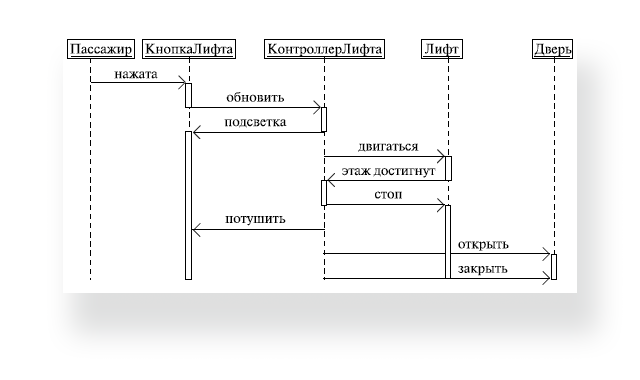

Використовується для уточнення діаграм прецедентів — описує поведінкові аспекти системи. Діаграма послідовності відображає взаємодію об'єктів в динаміці, в часі. При цьому інформація набуває вигляду повідомлень, а взаємодія об'єктів передбачає обмін цими повідомленнями в рамках сценарію.
